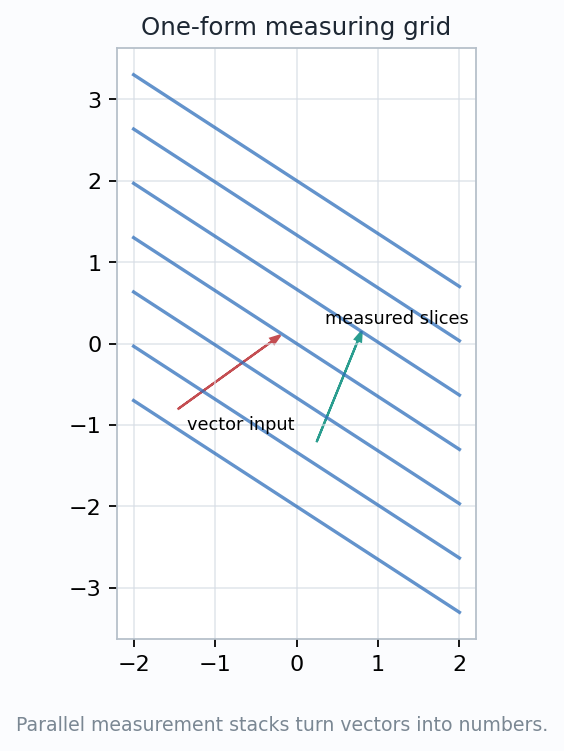
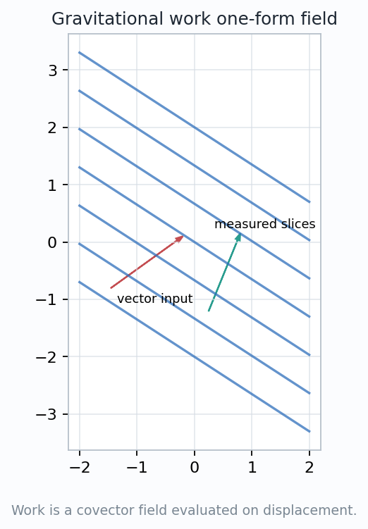
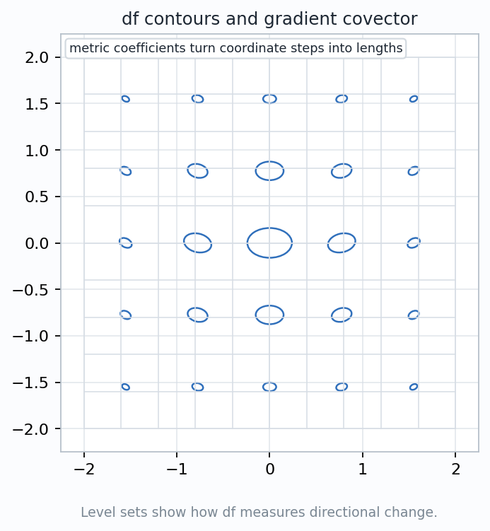
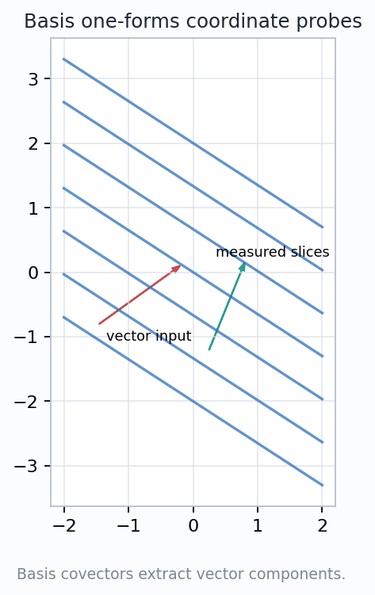
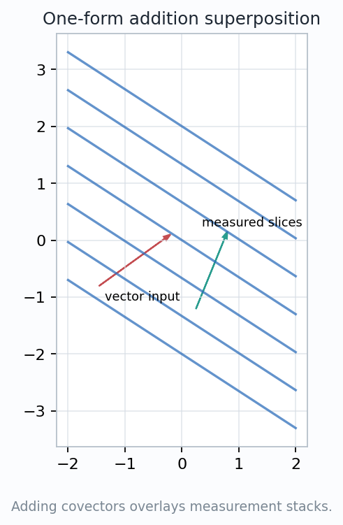

A 1-form is a measurement device: it eats a tangent vector and returns a signed scalar.
How does a covector measure a vector without being another vector?
$$\omega_p:T_pM\to\mathbb{R},\qquad v\mapsto\omega_p(v)$$
Measuring stacks become work, directional change, coordinate probes, linear combinations, and finally line integrals.

$$\omega_p\in T_p^*M,\qquad \omega_p(av+bw)=a\omega_p(v)+b\omega_p(w).$$
The blue stacks do not point like a vector field. They test the vector that is handed to them.
$$\omega=a\,dx+b\,dy,\qquad v=v^x\partial_x+v^y\partial_y,$$
$$\omega(v)=a\,v^x+b\,v^y.$$
A tangent vector is a directed first-order displacement. It answers: which way, and how fast?
A covector is a linear test on possible displacements. It answers: how much does this vector count in my measurement?
$$\omega(v)= \begin{bmatrix}a&b\end{bmatrix} \begin{bmatrix}v^x\\ v^y\end{bmatrix} =\langle \omega\mid v\rangle.$$
Vector components and covector coefficients transform in opposite ways so the scalar \(\omega(v)\) stays fixed.

$$\omega=F_x\,dx+F_y\,dy,\qquad \omega_p(\Delta r)=F(p)\cdot \Delta r.$$
A 1-form field assigns one covector to each point. The vector input changes with the motion; the covector changes with position.
$$W_\gamma=\int_\gamma \omega=\int_a^b \omega_{\gamma(t)}(\gamma'(t))\,dt.$$
The integrand is scalar at every instant. A line integral adds readings, not arrows.
$$df_p(v)=D_v f=\left.\frac{d}{dt}\right|_{t=0}f(\gamma(t)),\qquad \gamma(0)=p,\ \gamma'(0)=v.$$
The gradient vector \(\nabla f\) needs a metric. The covector \(df\) is defined before choosing lengths and angles.

$$dx(\partial_x)=1,\quad dx(\partial_y)=0$$
$$dy(\partial_x)=0,\quad dy(\partial_y)=1.$$
If \(v=v^x\partial_x+v^y\partial_y\), then \(dx(v)=v^x\) and \(dy(v)=v^y\).

$$(a\omega+b\eta)(v)=a\,\omega(v)+b\,\eta(v).$$
Two covectors can be combined before the vector arrives, or their scalar answers can be combined after evaluation.
A negative coefficient reverses the sign of the measurement. That sign matters when integrals appear.

$$\sum_i \omega_{\gamma(t_i)}(\gamma'(t_i))\,\Delta t$$
$$\longrightarrow\quad \int_\gamma \omega.$$
The path supplies a point \(\gamma(t)\) and a tangent vector \(\gamma'(t)\). The 1-form supplies the scalar reading.
Only numbers are summed. This is why orientation and sign are part of the data, not bookkeeping decoration.
The same measurement idea will scale from curves to oriented area and volume pieces.
measure
work
df
basis
add
A 1-form is geometry written as a linear measurement on motion.
Once this local measurement habit is solid, higher-degree forms will measure oriented surface and volume elements in the same spirit.